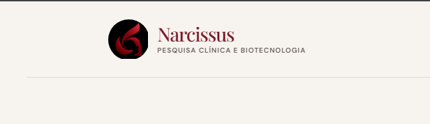

01
✳
Eficácia percebida
Estudos que investigam como as pessoas percebem os benefícios e o desempenho de um produto em condições de uso.
Conversar sobre este estudo ↗
Pesquisa clínica · Ribeirão Preto, SP
Avaliamos segurança, eficácia e percepção de produtos para que marcas desenvolvam com responsabilidade e cheguem ao mercado com evidências.
O que fazemos
Desenhamos e conduzimos estudos para avaliar produtos cosméticos, de higiene pessoal e fármacos de uso tópico.
Estudos que investigam como as pessoas percebem os benefícios e o desempenho de um produto em condições de uso.
Conversar sobre este estudo ↗Avaliação clínica da tolerabilidade cutânea e da experiência de uso, conduzida com acompanhamento profissional.
Conversar sobre este estudo ↗Estudos de tolerabilidade e percepção de produtos destinados à região dos olhos, sob avaliação especializada.
Conversar sobre este estudo ↗Ensaios in vitro e estudos clínicos para apoiar a avaliação de segurança e o desenvolvimento responsável de produtos.
Conhecer possibilidades ↗Cada protocolo é definido conforme o produto, o objetivo do estudo e os critérios técnicos e éticos aplicáveis.
Fale com nosso time ↗A Narcissus
Conheça nosso trabalho e os princípios que orientam cada projeto.
A Narcissus é uma empresa de pesquisa clínica e biotecnologia.
Realizamos testes clínicos e pré-clínicos para pesquisa científica e desenvolvimento de cosméticos e fármacos de uso tópico. Também oferecemos consultoria e assessoria técnico-científica, além de processamento histológico e imunoistoquímico para universidades, laboratórios e pesquisas em geral.
Converse com nossa equipe ↗Antes dos estudos em pessoas
Estudos prévios aos testes em humanos que ajudam a obter informações sobre segurança e eficácia do produto. Podem utilizar métodos alternativos ao uso experimental de animais.
Avaliação em participantes
Estudos realizados com participantes para avaliar produtos, observar resultados e compreender a impressão de futuros consumidores, conforme os objetivos de cada protocolo.
O que nos guia
“Inovar em soluções que proporcionem aos nossos clientes meios de agregar valor aos seus produtos.”
“Pesquisar, inovar e avaliar com qualidade e confiabilidade produtos cosméticos, de higiene pessoal e fármacos de uso tópico.”
Ética, seriedade, respeito, competência, inovação e transparência.
Estudos em foco
O desenho depende das características do produto e das alegações que a marca pretende avaliar.
Percepção de hidratação, sensorial e conforto ao longo do uso.
Aceitabilidade e tolerabilidade oftalmológica em condições definidas.
Avaliação da percepção de uso e benefícios relatados por participantes.
Investigação clínica de segurança e tolerabilidade cutânea.
Exemplos ilustrativos. A viabilidade e o protocolo são avaliados caso a caso.
Para participantes
Voluntários contribuem para a avaliação de produtos em estudos conduzidos com orientação e acompanhamento da equipe.
Você está em Ribeirão Preto?
Os estudos recrutam pessoas da cidade ou que tenham atividade diária no município. Cada pesquisa tem seus próprios critérios.
Antes de se inscrever
Entenda por que os produtos são avaliados, quem pode participar e como funciona o primeiro contato.
A inclusão também depende das condições de saúde e dos critérios de cada estudo.
Os estudos ajudam a avaliar a segurança, a eficácia e a experiência de uso de produtos. Alegações como “pele sensível”, “hipoalergênico”, proteção solar ou ação antirrugas podem ser investigadas de acordo com o objetivo e o protocolo de cada pesquisa.
Em geral, pessoas de 18 a 60 anos, de todos os gêneros, que morem em Ribeirão Preto ou tenham atividades diárias na cidade. Cada estudo tem critérios próprios, e a equipe avalia as condições de saúde e os demais requisitos antes de incluir alguém.
Fale com a equipe pelo telefone ou WhatsApp. Ela informa quais estudos estão recrutando, explica os critérios e orienta os próximos passos. O primeiro contato não garante a participação: a elegibilidade depende dos critérios do estudo.
Antes de decidir, você recebe informações sobre os procedimentos, visitas, possíveis desconfortos e acompanhamento. Conforme o protocolo, podem ocorrer avaliação profissional, exame físico e questionário de saúde. A participação é voluntária; leia as informações e tire suas dúvidas antes de consentir.
As avaliações descritas para o estudo não têm custo para o participante. Alguns estudos podem prever ressarcimento de despesas de deslocamento, conforme o protocolo. Confirme as condições com a equipe antes de aceitar participar.
Informações pessoais e de saúde devem ser tratadas de forma confidencial e conforme o protocolo e os documentos apresentados para cada estudo. A equipe explica quais dados são necessários e como serão utilizados antes da participação.
Vamos conversar
Conte um pouco sobre seu projeto ou fale com a equipe para saber mais sobre as pesquisas em andamento.
Chamar no WhatsApp ↗Av. Dra. Nadir Aguiar, 1805
Parque Tecnológico · Ribeirão Preto — SP
CEP 14056-680